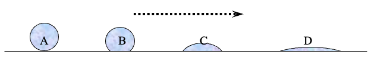
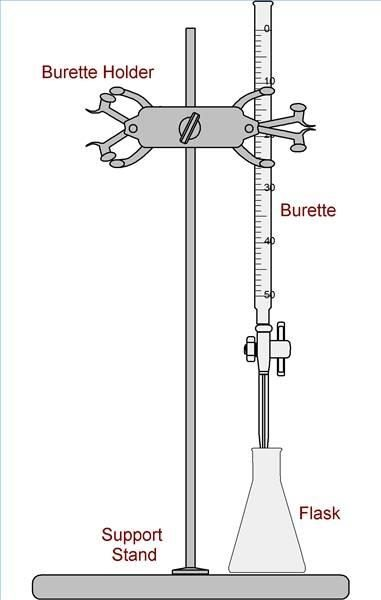
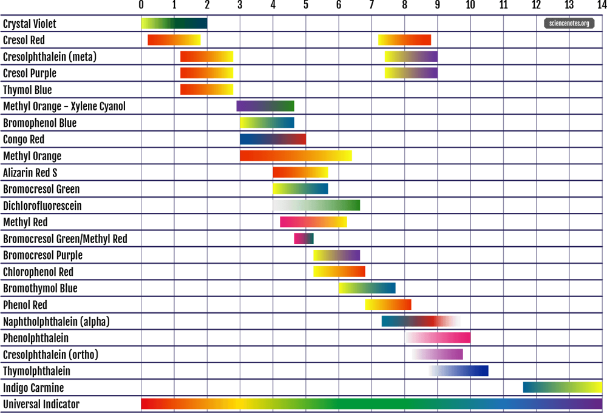
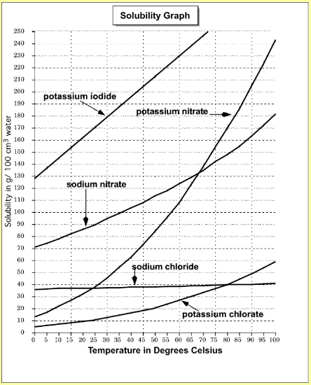

The solubility rules and precipitation table are in the Data section at the end of the paper. You will also need a table of ions (see the Water Analysis chapters).
Section A: Multiple choice (14 marks)
Which of the following contains a list of correct ionic formulae?
A substance that dissolves well in petrol but not in water would be described as:
Which of the following statements is correct?

In the diagram above, which liquid would have a low surface tension and high wetting of the surface?
Which of the following statements about bases is correct?
Which of the following lists properties of water?

In the Chemistry of Cleaners practical, hydrochloric acid was added from burettes (shown) to different basic household cleaners containing a few drops of methyl orange indicator. The purpose of the indicator was:
Which of the following general reaction types is correct?
Use the solubility rules to select which of the following compounds is insoluble.
Use the solubility rules to select which of the following compounds is soluble.
The solutions in which two beakers would form a precipitate when combined?
Ba2+ + SO42− → BaSO4(s), a white precipitate.
An unlabelled solution was left on a laboratory bench after a practical class. Samples were tested to identify it:
The substance is likely to be:
A yellow precipitate with iodide and a white precipitate with hydroxide both point to Pb2+. A gas with HCl (carbon dioxide) points to carbonate.
Acid–base indicators are dyes that change colour in the presence of acids or bases. They often change colour over a narrow pH range and are an easy way to detect the acidity or basicity of a solution. The table shows common indicator colour ranges.

A solution of pH 3.1 has 3 drops of methyl orange added to it. The resulting colour would be:
A clear solution with a pH of 7.0 was tested with universal indicator, phenol red and litmus paper (red and blue). Which results would be observed?
A neutral solution does not change the colour of either litmus paper.
Section B: Short answer (15 marks)
Complete the table. (Type formulas with ordinary numbers, e.g. H2O.)
| Name of acid or base | Formula |
|---|---|
| Phosphoric acid | |
| Sulfuric acid | |
| Hydrochloric acid | |
| Nitric acid | |
| Ammonia | |
| Potassium hydroxide |
Complete and balance the following equations.
- HCl + Pb → +
- H2SO4 + Al(OH)3 → + H2O
- H3PO4 + Na2CO3 → Na3PO4 + CO2 + H2O
Question 3 (6 marks)

Which salt is least soluble at 95 °C?
Below what temperature would 110 g of sodium nitrate not entirely dissolve in 100 mL of water?
Read across from 110 g to the sodium nitrate curve, then down: about 47 °C.
What mass of potassium nitrate needs to be added to 500 mL of water to produce a saturated solution at 30 °C?
100 mL at 30 °C dissolves 45 g of KNO3 (1 mark), so 500 mL dissolves 45 × 5 = 225 g (1 mark).
50 mL of a saturated solution of potassium nitrate is cooled from 75 °C to 45 °C. What mass of potassium nitrate will crystallise out of the solution?
100 mL: 155 g dissolves at 75 °C and 75 g at 45 °C, so 80 g crystallises (1 mark). For 50 mL, halve it: 40 g (1 mark).
Data: solubility rules and precipitation table
Soluble compounds
| Compounds containing | Exceptions |
|---|---|
| Li+, Na+, K+ | none |
| Nitrate (NO3−) | none |
| Ammonium (NH4+) | none |
| Chloride, bromide, iodide (Cl−, Br−, I−) | Ag+, Pb2+ |
| Sulfate (SO42−) | Ba2+, Pb2+, Ca2+, Ag+ |
Insoluble compounds
| Compounds containing | Exceptions |
|---|---|
| Carbonate (CO32−) | Li+, Na+, K+, NH4+ |
| Phosphate (PO43−) | Li+, Na+, K+, NH4+ |
| Hydroxide (OH−) | Li+, Na+, K+, NH4+ |
| Sulfide (S2−) | Li+, Na+, K+, NH4+, Ca2+, Ba2+ |
Precipitation table (colour of any precipitate formed; a blank means no precipitate, i.e. a clear solution. "Cloudy" means the precipitate stays suspended in the water.)
| Cation | NO3− | SO42− | CO32− | Cl− | I− | Br− | PO43− | OH− | OH− with NH3 |
|---|---|---|---|---|---|---|---|---|---|
| Na+ | |||||||||
| K+ | |||||||||
| Ba2+ | white | white | white | cloudy | |||||
| Ca2+ | cloudy white | cloudy | cloudy | ||||||
| Cr3+ | grey | cloudy green | smoky green | ||||||
| Al3+ | cloudy | cloudy | cloudy (light) | cloudy | |||||
| Zn2+ | cloudy | dense cloudy | cloudy | ||||||
| Fe2+ | grey/green | grey | green | light green | |||||
| Fe3+ | light yellow | brown | brown | ||||||
| Cu2+ | light blue | mustard | blue | blue | royal blue | ||||
| Pb2+ | white | white | yellow | cloudy | white | white | white | ||
| Ag+ | light brown | cloudy | light yellow | cloudy | light brown | brown |